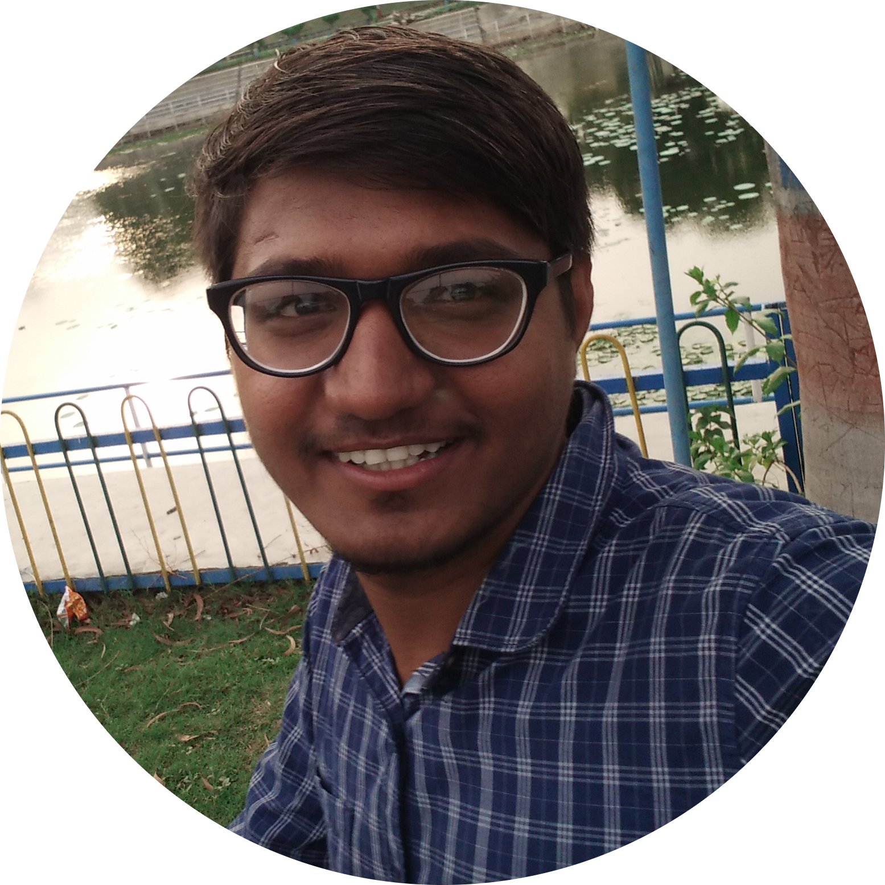

Dhananjay R.Dwivedi
Engineering Graduate
New Sahakar Nagar, Nagpur, Maharashtra (INDIA) dhananjay0616me@gmail.com | 9834601900
Objective
I am an ambitious Mechanical Engineer whose ambition is learn and grow, I am keen to work in a
challenging and dynamic environment that helps me to discover my full potential and contribute to my organisation
Professional Experience (Internship)
Northern Coalfield Limited (NCL) Singrauli Madhya Pradesh 06/19 - 07/19
Engineering Intern
- Studied Engine Maintenance and exposure to Related sub- assemblies and spares
- Engine spares procurement process and supply chain related challenges
- Worked closely with engineers and assisted with testing of heavy machinery equipment’s
- Prepared standard reports and documentation to communicate outcome of Internship to chief enginee
Education
Government Engineering College Nowgong Chhatarpur,Madhya Pradesh
Bachelor
Of Engineering Mechanical Engineering
CGPA 7.03 (2020)
- Awarded best project in the Mechanical category
- Presented various technical papers in tech fest
Bro Mathew Montford Integrated Centre Nagpur Maharashtra
Higher Secondary
School Education
61.85 % (2016)
- Elected Captain of Cricket Team
- House captain and sports committee head
Smt.Jankidevi Jaiswal High school Nagpur, Maharashtra
Secondary School
Education
72.73 % (2012)
You can reach Dhananjay at:
-
Linkedin profile
-
Contact details
Project
Project: ‐ Beam Engine Powered Circular Hacksaw
- Led projects and analyzed data to identify opportunities for improvement.
- Used critical thinking to break down problems, evaluate solutions and make decisions.
- Developed team communications and information for meetings.
Major Project: ‐ Three Wheeler Tilting Tricycle
- Collaborated with team members to achieve target results.
- Learned new skills and applied to daily tasks to improve efficiency and productivity
- Created plans and communicated deadlines to complete projects on timev.
Certifications and expertise
- MS OFFICE (MSCIT Certificate)
- Basic of Electric Vehicles (EV)
- Good hands on in MS office (Excel and MS presentations)
- Good project management skills (Basics of project management) – CAPM PMI Certificate
- Assertive, influential with good communication skills
- Flexible on my schedule and working environment
Accomplishment
- Qualified JEE Mains
- Qualified NEET
- Vikramaditya scholarship for meritorious student in general category
Language
- English Expertise
- Hindi Expertise
- Marathi Intermediate
Key Skills
- Communication Skills ⭐⭐⭐⭐⭐
- Critical Thinking ⭐⭐⭐⭐
- Problem Solving Skills ⭐⭐⭐⭐
- Emotional Intelligence ⭐⭐⭐⭐
- Teamwork ⭐⭐⭐⭐
- Leadership ⭐⭐⭐⭐
- Data Analysis ⭐⭐⭐⭐
Personal Interests
- Interested in current affairs and sports (mostly outdoor)
- Travelling to new places to know how new culture
- Reading books and music